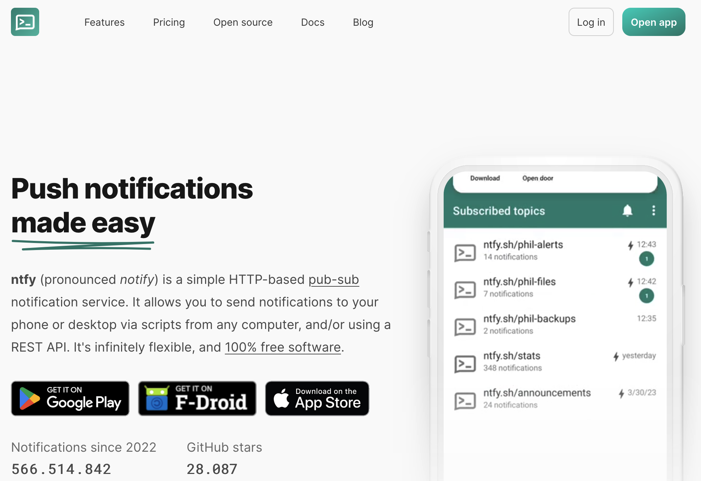
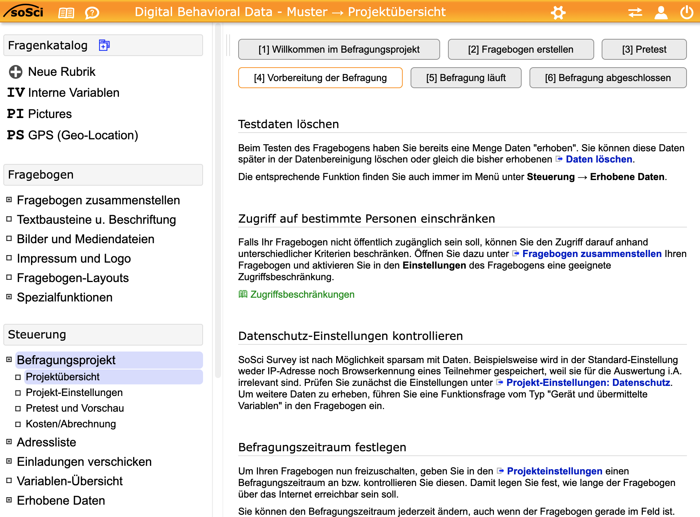

| Session | Datum | Time | Topic |
|---|---|---|---|
| 1 | 24.10.2024 | 09:45 - 11:15 | 🚀 Kick-Off |
| ✏️ Independent study and assignments | |||
| 2 | 09.01.2026 | 09:00 - 16:00 | 📚 From Theory to Questionaire |
| 3 | 23.01.2026 | 09:00 - 16:00 | 📚 From Questionaire to Pretest |
| 4 | 30.01.2026 | 09:00 - 16:00 | 📚 From Pretest to Analysis |
| 5 | 06.02.2026 | 09:00 - 16:00 | 📚 Analysis & Evaluation |
From Theory to Questionaire
Block 1
09.01.2026
Begrüßung & Koordination
Kurzer Rückblick & Organisatorisches zum Anfang
Visuelle Kommunikation trifft DBD
Hintergrund zum Seminar
Außenwerbung als visuelles Kommunikationsmedium:
- macht sichtbar, wie Botschaften im öffentlichen Raum gestaltet und wahrgenommen werden
- visuelle Daten (z. B. Fotos, Motive) sind zentral, um diese Formen empirisch zu erfassen und zu analysieren.
Verknüpfung mit digitalen Verhaltensdaten:
- ermöglicht die Analyse, wie visuelle Werbereize mit digitalen Spuren (z. B. Suchverhalten, Social-Media-Aktivität oder Standortdaten) zusammenhängen
Semesterplan
Half way there!
Überblick über eure bisherigen Assigments
| Assignment | Punkte | Deadline | Status |
|---|---|---|---|
| 👥 Written assignment: Research Project Sketch | 30 Pts. | 18.12.2026 | ✅ |
| 👤 Peer Review: Research Project Sketch | 20 Pts. | 05.01.2026 | ✅ |
| 👤 Participation: Pre-Test | 20 Pts. | 01.2026 | 🏗️ |
| 👥 Written assignment: Implementation Report | 30 Pts. | 28.02.2026 | ❓ |
Kurze Rückfragen
Fragen zu euren Erfahrungen bei zu den bisherigen Assignments
Wie waren eure Erfahrungen bei der Erstellung des Research Project Sketch?
Wie war der Prozess des Peer Reviews (Feedback geben & erhalten)?
Wie ist der akutuelle Stand der R-Kenntnisse?
Gibt es Wünsche zu Input über bestimmten Analyseverfahren?
Heutige Agenda
Überblick über den Ablauf des heutigen Tages
| Slot | Zeit | Programmpunkt |
|---|---|---|
| 09:00 - 09:30 | Begrüßung & Koordination | |
| 09:30 - 09:45 | Kurze Pause | |
| 1 | 09:45 - 11:15 | Research Sketches im Fokus |
| 11:15 - 11:30 | Kurze Pause | |
| 2 | 11:30 - 12:45 | Fragebogen im Fokus |
| 12:45 - 13:45 | Mittagspause | |
| 3 | 13:45 - 15:45 | Hands-On: Fragebogen |
| 4 | 15:45 - 16:00 | Abschluss & Ausblick |
Short Break
15 Minuten Pause
15:00
Research Sketches im Fokus
Vorstellung, Fragen & Diskussion
Pitch your project!
Gemeinsame Basis schaffen um Synergien zu finden
Kurze Vorstellung eurer Forschungsprojekte, um …
gemeinsames Verständnis der verschiedenen Forschungsprojekte schaffen (z.B. theoretische Definitionen, methodische Operationalisierung & Forschungsdesigns)
Synergien und Gemeinsamkeiten zu identifizieren
Herausforderungen und offene Fragen zu diskutieren
Möglichkeiten zur Zusammenarbeit und gegenseitigen Unterstützung zu erkunden
💻 And now … you!
Arbeitsauftrag (20 Minuten): Erstellt einen Elevator Pitch für euer Projekt
Arbeitsauftrag
In euren Gruppen …
- erstellt einen Kurzpräsentation (max. 4 Folien, 5–8 Minuten), die folgende Fragen beantwortet:
- Was untersucht ihr und warum ist das relevant? (1 Folie)
- Wie wollt ihr das untersuchen? (1–2 Folien)
- Welche Herausforderungen seht ihr und wo braucht ihr Feedback? (1 Folie)
- Bitte nutzt die bereitgestellte Folienvorlage (Google Slides) auf der nächsten Folie
Folienvorlage verwenden
- Bitte nutzt die bereitgestellte Folienvorlage (Google Slides) auf der nächsten Folie
Get started!
Bitte nutzt die jeweilige Folienvorlage für die Dokumentation euerer Ergebnisse
20:00
Short Break
15 Minuten Pause
15:00
Fragebogen im Fokus
Statusupdate zu den Tools
Statusupdate
Update zu den Herausforderungen der praktischen Umsetzung
- Datenschutz (DSGVO) als Endgegner
- Besondere Herausforderung bei der Nutzung von Bildern durch Berücksichtigung von Persönlichkeitsrechten dritter Personen
- Konsequenz: Umfragen im Seminar nur als Pre-Test/Proof of Concept, aber keine koordinierten Umfrage
- Einsatz von klassischen Umfragesoftware, keine Nutzung von Apps (für Befragung)
- Apps mit zu eingeschränkten Funktionen oder zu “teuer” (weil eigene Entwicklung/Programmierung notwendig)
Toolbox statt nur eines Tools
Die zur Verfügung stehenden Tools
Keyingress (kostenpflichtig): eine Multichannel-Toolbox zur Erstellung, Durchführung und Auswertung von Befragungen über Online-, Offline-, Telefon- (CATI) und Panel-Kanäle, mit integriertem Reporting-Dashboard, flexiblen Automatisierungs- und Schnittstellenfunktionen
SoSci Survey (kostenlos für akademische Zwecke): flexible, DSGVO-konforme Online-Umfragesoftware aus Deutschland, mit der sich anspruchsvolle wissenschaftliche und kommerzielle Befragungen erstellen, durchführen und auswerten lassen.
ntfy.sh (kostenlos/open-source): einfacher Push-Benachrichtigungsdienst zur Übermittlung von Erinnerungen für ESM-Studien
SoSci Suvery als Basis
Nutzung von SoSci Survey als Grundlage für die Umfrage(n)
- Bei der Verwendung von SoSci Survey überwiegen die Vorteile, speziell mit Blick auf die potentielle Weiterverwendung für die Masterarbeit:
- Einfacher Zugang (kostenlos für akademische Zwecke)
- Umfangreiche Dokumentation & Tutorials
- Große Community (Austausch & Support)
- Integration mit R (Datenexport & -analyse)
- Aber: Komplizierte Feldsteuerung (dort ggf. eines der anderen Tools nutzen)
ntfy me!
ntfy.sh als Workaround
- Nutzung von ntfy.sh als einfacher Push-Benachrichtigungsdienst zur Übermittlung von Erinnerungen für ESM-Studien
- Open-Source, einfach zu bedienen und flexibel anpassbar
- Skriptbasiertes Scheduling (via Server)

Sneak Preview
Vorstellung des aktuellen Standes der Umfrage
- Template erstellt, das folgende Fragen beinhaltete
- Fotoaufnahme (benötigt Erlaubnis zur Nutzung der Kamera)
- GPS-Location (benötigt Erlaubnis zur Nutzung der Standortdaten)
- Schaut euch gerne die Debug-Vorschau an und testet den Fragebogen selbst (Daten/Antworten werden nicht gespeichert)
Kurze Vorstellung des Backends
Vorstellung des SoSci Survey Backends

💬 Let’s discuss
Vorschlag zum weiteren Vorgehen
- Jede Gruppe erstellt ihre eigene Umfrage auf Basis Ihres Fragebogens
- Nutzung des SoSci Survey Templates als Grundlage und Erweiterung um eigene Fragen
- Überarbeitung, Testing & Feedback im nächsten Zeitslot
- Erfahrungsbericht und Finalisierung in nächster Blocksitzung
- Frage zum Studien-Monitoring:
- Serienmail vs. notify.sh?
- Eigenständig oder “zentral”?
Lunch Break
60 Minuten Mittagspause
Hands-on: Arbeit am Fragebogen
Arbeiten mit SoSci Survey
💻 Hands-on Zeit!
Arbeitsauftrag (90 Minuten): Arbeitet an eurem Fragebogen
Arbeitsauftrag
In euren Gruppen …
- arbeitet die Checkliste für die Erstellung ab
- passt den Fragebogen an euer (überarbeitetes) Forschungsdesign an
- denkt über den Schedule für die Versendung der Kurzfragebögen nach
- testet euren Fragebogen (Pretest-Link), auch auf unterschiedlichen Geräten!
Währenddessen: Feedback
- Sucht das Gespräch zu anderen Gruppen und gebt euch gegenseitig Hilfe und Feedback
- Ich bin während der gesamten Zeit für Fragen und Unterstützung verfügbar
- Ich wandere von Gruppe zu Gruppe, um Feedback zu geben und Fragen zu beantworten
Erstellung einer eigenen Befragung
Checkliste für die Erstellung
Time for questions
Until we see us again
Arbeitsaufträge für die nächste Sitzung
- Finalisiert euren Fragebogen basierend auf dem heutigen Feedback
- Finalisiert euer Forschungsdesign (insb. Schedule für Kurzfragebögen)
- Optional, aber sehr empfohlen: Testet euren Fragebogen!
- Nutzt den Pretest-Link, um euren Fragebogen zu testen
- Sammelt eigene Erfahrung in der Anwendung!